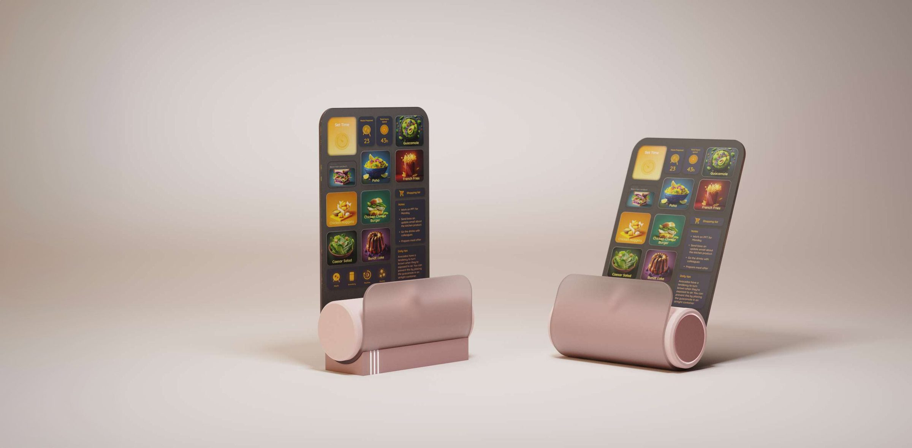
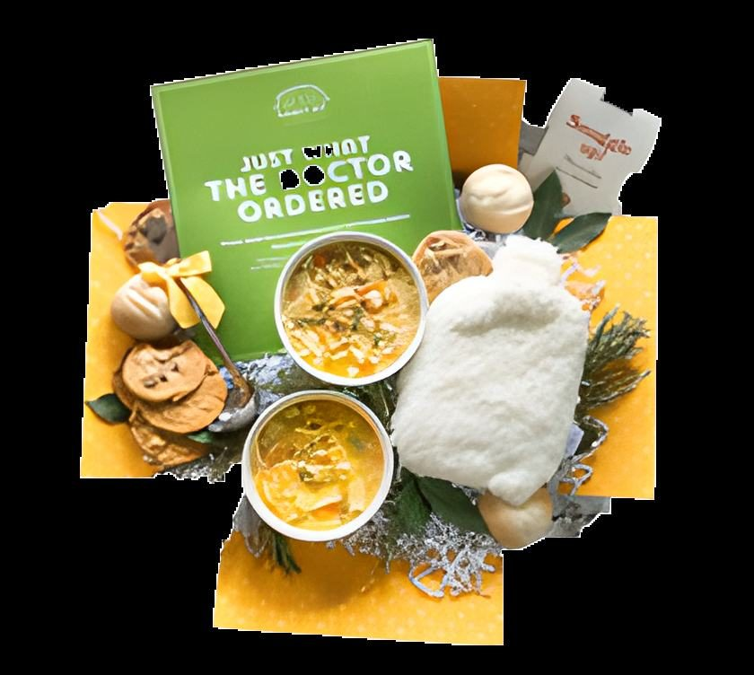
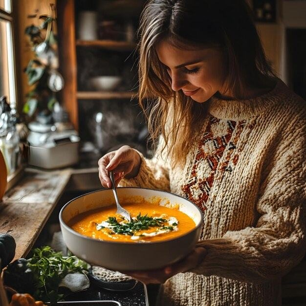

Chef
A kitchen device plus app that gives people recipe options tailored to the limited resources and time constraints of a home kitchen.
User Research, Product Design, UI/UX

Why this recipe exists
Young city dwellers and busy professionals rarely have the time, energy, or ideas to cook at home. Fast food, frozen meals, and takeout fill the gap, and both health and the pleasure of cooking pay for it. Smart appliances and recipe apps already exist, but none of them bring convenience, personalization, and engagement together well enough to make cooking at home feel easy and worth doing.

